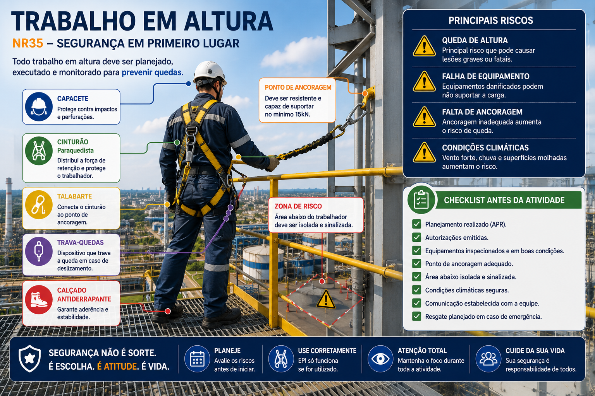

Duração
35 minutos
Nível
Básico
Área
Segurança
Norma
NR35
O que é trabalho em altura?
Segundo a NR35, trabalho em altura é toda atividade executada acima de 2 metros do nível inferior, onde exista risco de queda.
Esse tipo de atividade exige:
Sistema seguro de trabalho em altura
A imagem abaixo demonstra elementos importantes para execução segura de atividades em altura, incluindo ancoragem, EPIs, checklist e zonas de risco.

EPIs utilizados
Capacete
Protege contra impactos e quedas de objetos.
Cinturão paraquedista
Distribui forças de retenção em caso de queda.
Talabarte
Conecta o trabalhador ao sistema de ancoragem.
Trava-quedas
Reduz risco de queda livre.
Principais riscos
Pequenos erros em atividades em altura podem gerar consequências graves ou fatais.